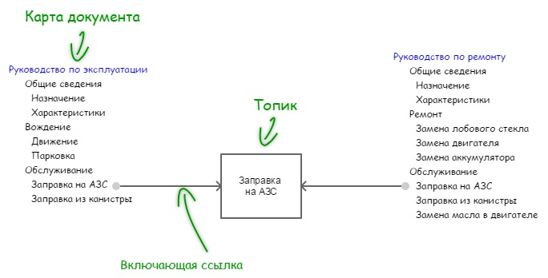

Стандарт DITA
DITA (Darwin Information Typing Architecture) – стандарт на базе XML, предназначенный для разработки, структурирования и публикации технической документации. Создан IBM с целью упрощения повторного использования и фильтрации контента.
Основные сущности DITA:
- Топик. Озаглавленный блок информации, который может быть понят в отдельности от других блоков и используется в различных контекстах. Раскрывает один конкретный вопрос.
- Карта. Определяет набор, последовательность и состав топиков, которые должны быть включены в поставку (конечный документ). Можно использовать фильтры (условные конструкции).
- Выходные форматы. Поставку можно осуществить в docx, pdf, html и других форматах. Механизм публикации DITA включает форматирование текста, разметку страницы и т.д.
Концептуальная визуализация


Пример карты документа
<?xml version="1.0" encoding="UTF-8"?>
<!DOCTYPE map PUBLIC "-//OASIS//DTD DITA Map//EN" "map.dtd">
<map id="modSaragosaDatasheet" xml:lang="ru">
<title>Электромобиль «<keyword keyref="prodName"/>
<keyword keyref="modName"/>»</title>
<!-- Включающие ссылки на выносные карты -->
<mapref href="Common/prodkeys.ditamap"/>
<mapref href="Saragosa/modkeys.ditamap"/>
<!-- Включающие ссылки на топики -->
<topicref href="Common/topics/overview.dita"/>
<topicref href="Common/topics/generalView.dita"/>
<topicref href="Common/topics/techParams.dita"/>
</map>
Пример типовой врезки
<note id="noteSafety" type="important">
<p>Электромобиль — современное экологически чистое транспортное
средство повышенной опасности. Перед использованием электромобиля
ознакомьтесь с разделом «Безопасность».</p>
</note>
<note id="noteSafetyMnt" type="important">
<p>Электромобиль — современный технически сложный подвижной электромеханический
прибор. Перед обслуживанием электромобиля ознакомьтесь с разделом
«Безопасность».</p>
</note>